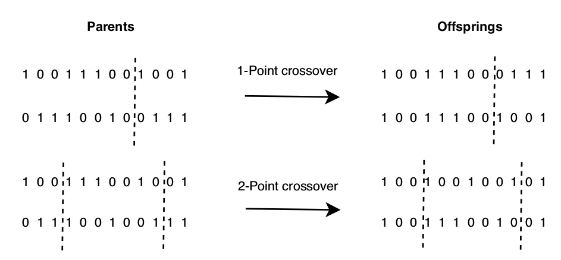
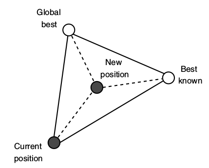

Genetic Algorithms
Particle Swarm Optimization
Outline
- Metaheuristics
- S-metaheuristics and P-metaheuristics
- P-metaheuristics
- Genetic Algorithms (GA)
- Selection
- Crossover
- Mutation
- Replacement
-
Particle Swarm Optimization (PSO)
- Neighboorhood
- Particle
- Movement
Metaheuristics
Rosenbrock's function

$f(x,y) = (1 - x)^2 + 100(y - x^2)^2$
Metaheuristics
Ackley's function
$f(x,y) = -20 exp\big[-0.2 \sqrt{0.5(x^2+y^2)}\big] - exp\big[0.5(cos2\pi x+cos2\pi y)\big] + e + 20$
Metaheuristics
Traveling Salesman Problem
Metaheuristics
- Representation in solution space
- Objective function
- Neighborhood
Metaheuristics
S-metaheuristics: a single solution
P-metaheuristics: a population of solutions
Metaheuristics
S-metaheuristics
- Local search (hill-climbing)
- Tabu search
- Simulated Annealing
P-metaheuristics
-
Evolutionary Algorithms (EA)
- Genetic Algorithms (GA)
- Evolution Strategies (ES)
- Evolutionary Programming (EP)
- Genetic Programming (GP)
-
Swarm intelligence
- Particle Swarm Optimization (PSO)
- Ant Colony Optimization (ACO)
- Bee colonies (BC)
P-metaheuristics
Evolutionary Algorithms (EA)
Evolutionary Algorithms (EA)
Evolutionary Algorithms (EA)
chromosome: solution
locus: index of variable in the solution
allele (gene): variable in the solution
genotype: encoding of the solution (used in crossover and mutation)
phenotype: characteristics of the solution (used in fitness and selection)
Evolutionary Algorithms (EA)
Evolutionary Algorithms (EA)
- Genetic Algorithms (GA)
- Evolution Strategies (ES)
- Evolutionary Programming (EP)
- Genetic Programming (GP)
Genetic Algorithms (GA)
- Individuals
- binary
- discrete
- real-valued
- permutation
- Parent selection
- roulette
- tournament
- rank-based
- Crossover
- n-point
- uniform
- Mutation
- bit flipping
- random replacement
- Replacement
- offspring replace parents
- elitism
Genetic Algorithms (GA)
- Individuals
- binary
- discrete
- real-valued
- permutation
- Parent selection
- roulette
- tournament
- rank-based
- Crossover
- n-point
- uniform
- Mutation
- bit flipping
- random replacement
- Replacement
- offspring replace parents
- elitism
GA selection: roulette
GA selection: roulette
- classic roulette:
- pick individuals with probability proportional to their fitness.
- cons: possible stagnation, not enough selection pressure
- stochastic universal sampling: roulette with multiple "pointers"
GA selection: tournament
GA selection: tournament
- pick $K$ individuals, take the best
- might be probabilistic:
- pick the 1st with prob $p$, the 2nd with prob $p(1-p)$, the 3rd with prob $p(1-p)^2$, etc
- if $K = N →$ deterministic search
- if $K = 1 →$ random search
GA selection: rank-based
GA selection: rank-based
- relative to the fitness of other individuals
$P(i) = \frac{2 - s}{μ} + \frac{2(r(i) - 1)(s-1)}{μ(μ - 1)}, 1 < s ≤ 2$
$μ = $ population size
$r(i) = $ rank of individual $i, r(i) \ge 1, r(i) = 1$ for worst individual
- selection pressure:
higher $s → $ more importance to better individuals
Genetic Algorithms (GA)
- Individuals
- binary
- discrete
- real-valued
- permutation
- Parent selection
- roulette
- tournament
- rank-based
- Crossover
- n-point
- uniform
- Mutation
- bit flipping
- random replacement
- Replacement
- offspring replace parents
- elitism
GA crossover
- heritability: material from both parents should be inherited
- validity: crossover should produce valid individuals
ideally crossover should be non-disruptive, i.e., it should produce small changes, both in the genotype and the phenotype
GA crossover
- n-point: pick n cut points, and swap the portions among the parents
- uniform: each gene goes to one parent or the other with a fixed probability
GA crossover: n-point
n-point crossover (n > 1) is less disruptive than 1-point crossover for co-adapted variables
at the beginning or the end of the individual.
GA crossover: uniform
GA for permutations: order crossover
GA for permutations: two-point crossover
GA: crossover for continuous representations
- Intermediate crossover: $o_i = αx_{1i} + (1-α)x_{2i}$
- Geometrical crossover: $o = [\sqrt{x_{11}x_{21}},...,\sqrt{x_{1n}x_{2n}}]$
Genetic Algorithms (GA)
- Individuals
- binary
- discrete
- real-valued
- permutation
- Parent selection
- roulette
- tournament
- rank-based
- Crossover
- n-point
- uniform
- Mutation
- bit flipping
- random replacement
- Replacement
- offspring replace parents
- elitism
GA mutation
- ergodicity: search space must be explored with equal probability
- validity: solutions produces must be valid
- locality: mutation should produce a minimal change
GA mutation: Variants
discrete
- bit flipping
- random replacement
- swapping, inversion, or insertion in order-based representation
continuous
- uniform
- gaussian
GA mutation: order-based operations
Genetic Algorithms (GA)
- Individuals
- binary
- discrete
- real-valued
- permutation
- Parent selection
- roulette
- tournament
- rank-based
- Crossover
- n-point
- uniform
- Mutation
- bit flipping
- random replacement
- Replacement
- offspring replace parents
- elitism
GA: replacement
Extreme strategies:
- Generational replacement: offspring population replace the parent population
- Steady-state replacement: Only one offspring is generated, to replace the worst individual
- Elitism: replace λ individuals, 1 < λ < μ
- stochastic or deterministic replacement
GA: common parameters
- mutation $\in [0.001, 0.01]$
alternatively $1/k$, $k$ = number of variables - crossover $\in [0.3, 0.9]$
- population size usually $\in [20, 100]$
Other evolutionary algorithms
Estimation of Distribution Algorithms (EDA)
Differential Evolution (DE)
Particle Swarm Optimzation (PSO)
PSO: particle structure
- $x$: current position
- $p$: best position of particle's history
- $v$: current direction and velocity
- x-fitness: current fitness
- p-fitness: best fitness of particle's history
PSO: neighborhood
PSO: movement
PSO: update
$v_i^t ← \color{purple}{w}v_i^{t-1} + \color{red}{ρ_1}\color{orange}{C_1} (\color{blue}{p_i} - x_i^{t-1}) + \color{red}{ρ_2}\color{orange}{C_2} (\color{green}{p_g} - x_i^{t-1})$
$x_i^t ← x_i^{t-1} + v_i^t$
- $x_i^{t-1}$ : current position of particle $i$
- $\color{blue}{p_i}$ : best position of particle $i$
- $\color{green}{p_g}$ : position of best particle in the neighborhood of particle $i$
- $\color{red}{ρ_1}, \color{red}{ρ_2} \in [0,1]$
- $\color{orange}{C_1}, \color{orange}{C_2}$ are constants (local and social influence).
Typically both are set to 2. - $\color{purple}{w}$: inertia
- $v_{ij} \in [-V_{max}, V_{max}]$
PSO: update
if $f(x_i) > f(p_i)$ then $p_i ← x_i$
if $f(x_i) > f(p_g)$ then $p_g ← x_i$
PSO for discrete problems
- binary encoding
- Stochastic velocity models: use of a sigmoid function
- Geometric PSO (GPSO)
- Three-parent mask-based crossover (3PMBCX)
- combination between $x_i$, $p_i$ and $p_g$
- probabilities of getting a component from a parent is controled by $w_1$, $w_2$ and $w_3$ such that $\sum\limits_{i=1}^{3}{w_i} = 1$
Geometric PSO (GPSO)

PSO: common parameters
- population size $\in [20, 60]$
- $C1, C2 \le 2$
- neighborhood size $\in [2, n-1]$
- large neighborhood $→$ slower convergence, possibly better solutions.
- inertia $\in [0.4, 0.9]$